.png)
Materia destaque
Pós-pandemia: Aumento dos Casos de Ansiedade no Ambiente Escolar
Por: Yan Barros Araújo e Hannah Isabele Da Silva MarquesA pandemia da Covid-19 gerou diversos impactos na vida dos brasileiros e, dentre esses impactos, está a quarentena, que forçou as pessoas a ficarem confinadas em casa. O distanciamento social afetou principalmente adolescentes e jovens adultos, que tiveram que se adaptar à rotina de aulas on-line.
Com o fim da quarentena, outra situação nova foi vivida pelos jovens: as aulas presenciais pós-pandemia, com todas as medidas de prevenção estipuladas pela OMS. Essa nova realidade trouxe os jovens de volta às escolas e às faculdades, porém, agora com algumas marcas do isolamento, que foi um longo período de medo e de muitas inseguranças em relação ao contágio, aos sintomas e às sequelas da Covid-19. Uma das marcas que podemos citar referente ao retorno presencial foi o aumento de casos de ansiedade dentro das escolas. Em entrevista ao EAgro News, a aluna Jessyca Reis, matriculada na segunda série do ensino médio da Escola Agrotécnica da UFRR, afirmou que “a principal causa dessa ansiedade ter aumentado foi o confinamento. Os alunos se acostumaram a ficar sozinhos e a lidar sozinhos com os seus problemas e, a partir do momento que eles começaram a lidar com outras pessoas, foi um impacto bastante significativo, o que acabou gerando essa ansiedade”. Já a aluna Milena Gomes de Pinho, matriculada na terceira série do ensino médio da EAgro, em entrevista cedida ao nosso jornal, disse “que a pandemia trouxe medo, não só para os adolescentes, mas para qualquer pessoa, pensar no número de vidas que essa doença levou, e pensar que isso poderia acontecer com algum familiar ou amigo, foi um grande contribuinte para o aumento dos casos de ansiedade pós-pandemia".
Questionadas sobre o papel da escola em relação à busca por soluções para os casos de ansiedade pós-pandemia, as discentes evidenciaram suas opiniões. Para Jessyca Reis, “o principal papel da escola, neste caso, é disponibilizar atendimento psicológico aos alunos e treinar os profissionais da escola para saber lidar com essas situações, pois, muitas vezes, professores e monitores não conseguem lidar com certos acontecimentos que envolvem crises de ansiedade”. Já a discente Milena explicou que "o papel da escola é nada mais nada menos que compreender o aluno e demonstrar apoio, fazendo com que ele se sinta acolhido".
Vale destacar que o fornecimento de apoio psicológico por parte da escola é uma garantia prevista na Lei nº 13.935, de 11 de dezembro de 2019, cujo Art. 1º introduz que “As redes públicas de educação básica contarão com serviços de psicologia e de serviço social para atender às necessidades e prioridades definidas pelas políticas de educação, por meio de equipes multiprofissionais”.
Enquanto a EAgro ainda não conta com psicólogos e assistentes sociais em seu quadro de funcionários, o atendimento psicológico fornecido aos discentes é proveniente de um projeto do Curso de Psicologia da UFRR.
Outras alternativas encontradas pelos alunos da EAgro para amenizar os sintomas da ansiedade são as atividades esportivas, culturais e também os hobbies. Em entrevista ao EAgro News, uma estudante da Escola Agrotécnica falou sobre os métodos que usa para aliviar as crises: “geralmente para lidar com a ansiedade, eu cozinho, é algo que me acalma bastante e faz eu ocupar minha mente nesses momentos. Acho que as pessoas que lidam com ansiedade devem procurar algo que acalme elas, um hobbie, algo que possa fazer elas ocuparem a mente”.
Diante do exposto, procurar algo que nos acalme é sempre muito importante, já que uma mente descansada absorve melhor os conteúdos ensinados na hora da aula. Mas, não podemos esquecer que o acompanhamento psicológico é fundamental e, quando fornecido dentro do ambiente escolar, facilita muito, pois nem todos têm condições financeiras de fazer tal acompanhamento fora da escola, aliado a isso, ainda existem os casos de falta de apoio familiar, situações nas quais o jovem esconde de seus familiares o seu estado psicológico.
Por Yan Barros Araújo, editor, aluno da primeira série do ensino médio da EAgro e Hannah Isabele Da Silva Marques, repórter, aluna da segunda série do ensino médio da EAgro.
Editorial
O endeusamento do vestibular de medicina
Por Yan Barros Araújo
Quando entramos no ensino médio, algumas coisas nos são cobradas e, dentre elas, está a exigência de que sejamos "alguém na vida".
A imposição compartilhada por boa parte da sociedade é a de que entremos numa faculdade logo após a conclusão do ensino médio, mas, para tal ingresso,
o aluno deve se esforçar bastante nos estudos e passar no tão temido vestibular.
Uma das faculdades mais difíceis de se entrar é a de medicina, a faculdade que forma os salvadores de vidas.
Porém, as vagas para este curso são pouquíssimas, atrelado a isso, temos o alto prestígio desta área de trabalho,
o que acaba colocando ainda mais exclusividade no curso.
Todavia, ao escolhermos uma faculdade, devemos levar em consideração nossas aptidões, além das necessidades existentes no mercado de trabalho.
Contudo, o que acontece com frequência é o endeusamento da faculdade de medicina apenas por ser bem vista socialmente e pelas boas condições salariais,
dessa forma, o gosto pela área fica em último plano na hora da inscrição no vestibular.
Outro fator relevante que merece destaque se refere à rotina exaustiva do vestibulando de medicina, que se torna ainda mais cansativa quando o estudante se depara com
as seguintes frases que inundam suas redes sociais todos os dias: "estude enquanto eles dormem"; “Medicina é para poucos”; “Enquanto você descansa,
tem alguém estudando”. Vale frisar que as pessoas possuem realidades diferentes, condições psicológicas, físicas e financeiras distintas, portanto, estude,
mas respeite o tempo e o limite do seu corpo. Seja esforçado, dedicado, mas descanse sua mente.
A rotina de estudos para ingressar num curso cuja concorrência pode passar de 400 candidatos por vaga pode ser repleta de pressão e desgaste psicológico.
Medicina é um curso maravilhoso, mas não faça se você não sentir que tem vocação, afinal, existem outras graduações e cursos técnicos que podem te dar segurança
financeira e para os quais o modo de ingresso pode ser mais saudável psicologicamente.
Por Yan Barros Araújo, editor, aluno da primeira série do ensino médio da EAgro.
Yan Barros Araújo é editor da EAgro News, aluno da primeira série do ensino médio da EAgro.
Voz da comunidade escolar
Nesta primeira edição da Seção Voz da Comunidade Escolar, procuramos ouvir discentes da EAgro sobre a experiência no ensino remoto. Os primeiros entrevistados foram Daniel Duarte, acadêmico do curso de Tecnologia em Agroecologia e a aluna Yamille Caroline dos Santos Andrade, matriculada na segunda série do ensino médio.
Confira a entrevista:
EAgro News: Quanto ao ensino remoto, ele foi acessível para você?
Daniel Duarte: Para mim foi, ainda que houvesse uma certa dificuldade por conta da internet, até por conta de umas atividades que eram necessários o campo e outras coisas, mas foi acessível sim.
Yamille Caroline: Foi, pois tenho acesso à internet, computador e Whatsapp, mas pelas quedas de luz, às vezes não dava. Em outros casos diferentes do meu, pode ter se tornado bem difícil sim, mas fora isso tive um ensino remoto bem acessível e com bastante disponibilidade de tecnologias e afins.
EAgro News: Cite alguns prós e contras do ensino remoto.
Daniel Duarte: Olha, para encontrar um pró é até difícil, mas o benefício de ter um ensino remoto é que o aluno procura mais aprender, pois ele vê aquela dificuldade. Se você já tem dificuldade com o professor, sem o professor por perto você procura de verdade aprender, aqueles que querem, obviamente. O contra é como eu falei na última resposta, por conta da internet ruim, às vezes a pessoa tinha que ir até o campus, na biblioteca, e não podia, por estar fechada. Se tornou difícil por isso.
Yamille Caroline: Acho que a coisa que eu mais prezei foi ter mais acesso aos conteúdos, tive bem mais. Porém, uma coisa que eu não gostei, achei horrível na verdade, foi não ter muito contato com os professores e não poder tirar dúvidas presencialmente, mas, por meio do uso do celular e ter bastante acesso à internet, eu pude pesquisar mais comparado ao tempo de pesquisa nas aulas presenciais.
EAgro News: Para você, qual foi a importância da volta às aulas?
Daniel Duarte: O meu curso pega bastante a área prática, principalmente nas disciplinas em que há uma necessidade de prática de 60% ou até mesmo 80%. Se você tem só teoria e falta a prática, do que adianta você falar para mim se não sabe fazer?
Yamille Caroline: Foi importante a volta do ensino presencial para termos mais contato com os professores, com as matérias novas, coisas importantes para aprender, então, depois da pandemia, passamos a valorizar isso muito mais.
Daniel Duarte: Particularmente, eu não tenho muitas amizades, converso e tudo, mas foi muito defasado, eu não entrava muito em contato, mas quando era necessário para trabalhos em grupo, a gente sempre entrava em contato.
Yamille Caroline: Durante o ensino remoto e durante a minha entrada na nova escola (EAgro), foi bastante interativa na verdade, porque passávamos o dia na tela do computador/celular, conversando. Fazer atividade era obrigação, então foi bastante interativa e com bastante contato, mas não tanto quanto no presencial, mas não faltava interação.
EAgro News: Durante o ensino remoto, seus professores disponibilizaram tempo para você sanar dúvidas?
Daniel Duarte: Sem dúvida nenhuma! Uma coisa em que a EAgro tem como vantagem sobre qualquer outra escola é que os professores dão muito apoio aos alunos. Quando você precisar, basta entrar em contato, que eles sempre estarão lá para ajudar, não importa se presencial ou remotamente, eles tendem a cuidar de você como família, os professores da EAgro são muito gente boa.
Yamille Caroline: Os professores estavam sempre disponíveis para ajudar a gente, saber se precisávamos de alguma coisa. Disponibilizavam vídeos, tutoriais, atividades e trabalhos interativos, como quiz e diversas outras coisas. Eles tentavam ao máximo, tanto por programas, exemplos, trabalhos, etc.

Seção sala de aula
Enquanto isso, na Eagro
Coluna de esportes
O DESEMPENHO DA EAGRO NOS JOGOS ESCOLARES 2022
Por Erick Gabriel Araújo da Silva e Anne Ricaelly Rodrigues da Silva
Os Jogos Escolares 2022 tiveram início no dia 27 de julho e a EAgro se destacou em diversas modalidades.
Na modalidade futsal masculino, durante a primeira fase, tivemos uma derrota para o Colégio Sesi, seguida de uma vitória sobre o Colégio Militar Estadual Irmã Tereza Parodi.
Nosso time ainda jogou contra a Escola Estadual Major Alcides.
A equipe se classificou para a segunda fase, porém não conseguiu chegar nas finais, mas vale destacar o desempenho de nossos jovens jogadores.
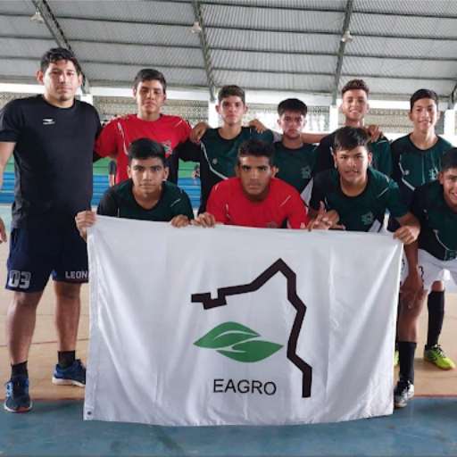
No futsal feminino, nossas meninas tiveram uma vitória na segunda fase, contra a Escola Estadual Indígena Paulo Augusto Silva.
Entretanto, não atingiram a pontuação para a participação nas finais. Mas, precisamos evidenciar a dedicação e o talento de nossas estudantes, principalmente da discente Sayara, goleira do time, que desempenhou lindamente seu papel, executando grandes defesas.
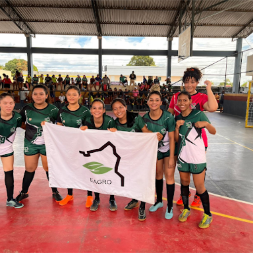
Nas modalidades individuais, a EAgro competiu com o karatê, o xadrez, o tênis de mesa e o taekwondo.
A aluna Érica de Melo Nascimento, matriculada no 1º ano B, foi nossa competidora no karatê. Na categoria kata, ela conquistou o 3º lugar. A discente ainda participou da categoria kumite, na qual ficou classificada no lugar mais alto do pódio.
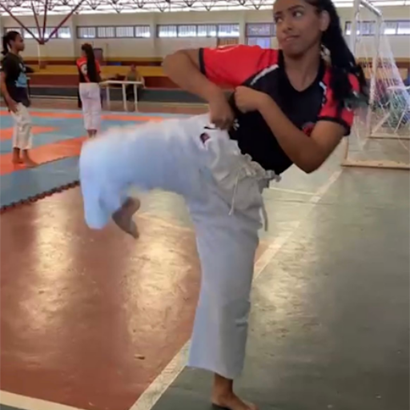
Nosso representante na modalidade xadrez foi o aluno Natanael dos Santos Pereira, do primeiro ano B.
O enxadrista ganhou duas partidas durante sua participação nos jogos escolares, conquistando assim a quarta posição.
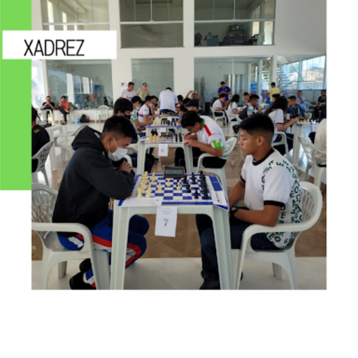
Já no tênis de mesa, o estudante Anthony, do primeiro ano, demonstrou suas habilidades vencendo duas partidas.
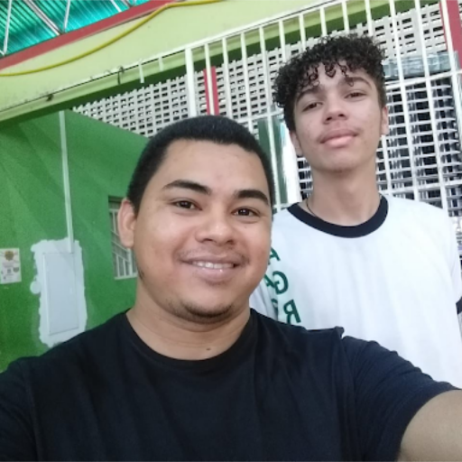
No taekwondo, nosso aluno do primeiro ano B, Dayllon Jonas Moreira de Amorim, conquistou o tão almejado primeiro lugar na competição regional, passando para a fase nacional.
Em entrevista ao nosso jornal, Dayllon afirmou que “para começar foi uma grande oportunidade para nós que treinamos taekwondo, gente de todos os municípios vieram aqui para Boa Vista, a competição foi na Escola Hitler de Lucena.
Pude fazer vários amigos e conhecer artistas marciais incríveis, todos diziam ser uma grande oportunidade, já que antigamente não existia o taekwondo nos jogos escolares. Para alguns, era a última oportunidade de ir, já que estavam com 17 anos.”
O atleta ainda salientou que “muita gente participou e torceu pelo taekwondo, com certeza deu mais visibilidade para a incrível arte marcial que é o taekwondo, onde é ensinado cortesia, integridade, domínio sobre si mesmo e espírito indomável para qualquer situação na vida.”
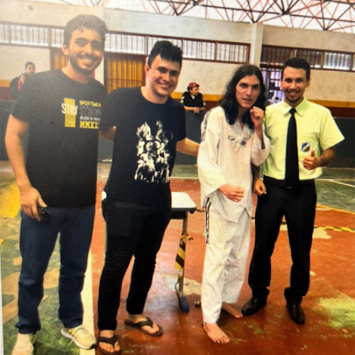
Nós, da equipe do EAgro News, damos os parabéns aos nossos competidores e competidoras, pois um grande esforço foi empregado por todos, desde o processo de inscrição até a disposição para participar das competições, que foram distribuídas ao longo de muitos dias.
Destacamos um reconhecimento especial para os meninos e meninas que ficaram no alojamento do Estádio Canarinho, longe de seus amigos e familiares, mas em prol do esporte e da participação da Escola Agrotécnica nos Jogos Escolares 2022. Sintam-se vitoriosos e vitoriosas por toda essa dedicação.
Quando entramos no ensino médio, algumas coisas nos são cobradas e, dentre elas, está a exigência de que sejamos "alguém na vida". A imposição compartilhada por boa parte da sociedade é a de que entremos numa faculdade logo após a conclusão do ensino médio, mas, para tal ingresso, o aluno deve se esforçar bastante nos estudos e passar no tão temido vestibular.
Uma das faculdades mais difíceis de se entrar é a de medicina, a faculdade que forma os salvadores de vidas. Porém, as vagas para este curso são pouquíssimas, atrelado a isso, temos o alto prestígio desta área de trabalho, o que acaba colocando ainda mais exclusividade no curso.
Todavia, ao escolhermos uma faculdade, devemos levar em consideração nossas aptidões, além das necessidades existentes no mercado de trabalho. Contudo, o que acontece com frequência é o endeusamento da faculdade de medicina apenas por ser bem vista socialmente e pelas boas condições salariais, dessa forma, o gosto pela área fica em último plano na hora da inscrição no vestibular.
Outro fator relevante que merece destaque se refere à rotina exaustiva do vestibulando de medicina, que se torna ainda mais cansativa quando o estudante se depara com
as seguintes frases que inundam suas redes sociais todos os dias: "estude enquanto eles dormem"; “Medicina é para poucos”; “Enquanto você descansa, tem alguém estudando”. Vale frisar que as pessoas possuem realidades diferentes, condições psicológicas, físicas e financeiras distintas, portanto, estude, mas respeite o tempo e o limite do seu corpo. Seja esforçado, dedicado, mas descanse sua mente.
A rotina de estudos para ingressar num curso cuja concorrência pode passar de 400 candidatos por vaga pode ser repleta de pressão e desgaste psicológico. Medicina é um curso maravilhoso, mas não faça se você não sentir que tem vocação, afinal, existem outras graduações e cursos técnicos que podem te dar segurança financeira e para os quais o modo de ingresso pode ser mais saudável psicologicamente.
Por Yan Barros Araújo, editor, aluno da primeira série do ensino médio da EAgro.
Nesta primeira edição da Seção Voz da Comunidade Escolar, procuramos ouvir discentes da EAgro sobre a experiência no ensino remoto. Os primeiros entrevistados foram Daniel Duarte, acadêmico do curso de Tecnologia em Agroecologia e a aluna Yamille Caroline dos Santos Andrade, matriculada na segunda série do ensino médio.
Confira a entrevista:
EAgro News: Quanto ao ensino remoto, ele foi acessível para você?
Daniel Duarte: Para mim foi, ainda que houvesse uma certa dificuldade por conta da internet, até por conta de umas atividades que eram necessários o campo e outras coisas, mas foi acessível sim.
Yamille Caroline: Foi, pois tenho acesso à internet, computador e Whatsapp, mas pelas quedas de luz, às vezes não dava. Em outros casos diferentes do meu, pode ter se tornado bem difícil sim, mas fora isso tive um ensino remoto bem acessível e com bastante disponibilidade de tecnologias e afins.
EAgro News: Cite alguns prós e contras do ensino remoto.
Daniel Duarte: Olha, para encontrar um pró é até difícil, mas o benefício de ter um ensino remoto é que o aluno procura mais aprender, pois ele vê aquela dificuldade. Se você já tem dificuldade com o professor, sem o professor por perto você procura de verdade aprender, aqueles que querem, obviamente. O contra é como eu falei na última resposta, por conta da internet ruim, às vezes a pessoa tinha que ir até o campus, na biblioteca, e não podia, por estar fechada. Se tornou difícil por isso.
Yamille Caroline: Acho que a coisa que eu mais prezei foi ter mais acesso aos conteúdos, tive bem mais. Porém, uma coisa que eu não gostei, achei horrível na verdade, foi não ter muito contato com os professores e não poder tirar dúvidas presencialmente, mas, por meio do uso do celular e ter bastante acesso à internet, eu pude pesquisar mais comparado ao tempo de pesquisa nas aulas presenciais.
EAgro News: Para você, qual foi a importância da volta às aulas?
Daniel Duarte: O meu curso pega bastante a área prática, principalmente nas disciplinas em que há uma necessidade de prática de 60% ou até mesmo 80%. Se você tem só teoria e falta a prática, do que adianta você falar para mim se não sabe fazer?
Yamille Caroline: Foi importante a volta do ensino presencial para termos mais contato com os professores, com as matérias novas, coisas importantes para aprender, então, depois da pandemia, passamos a valorizar isso muito mais.
Daniel Duarte: Particularmente, eu não tenho muitas amizades, converso e tudo, mas foi muito defasado, eu não entrava muito em contato, mas quando era necessário para trabalhos em grupo, a gente sempre entrava em contato.
Yamille Caroline: Durante o ensino remoto e durante a minha entrada na nova escola (EAgro), foi bastante interativa na verdade, porque passávamos o dia na tela do computador/celular, conversando. Fazer atividade era obrigação, então foi bastante interativa e com bastante contato, mas não tanto quanto no presencial, mas não faltava interação.
EAgro News: Durante o ensino remoto, seus professores disponibilizaram tempo para você sanar dúvidas?
Daniel Duarte: Sem dúvida nenhuma! Uma coisa em que a EAgro tem como vantagem sobre qualquer outra escola é que os professores dão muito apoio aos alunos. Quando você precisar, basta entrar em contato, que eles sempre estarão lá para ajudar, não importa se presencial ou remotamente, eles tendem a cuidar de você como família, os professores da EAgro são muito gente boa.
Yamille Caroline: Os professores estavam sempre disponíveis para ajudar a gente, saber se precisávamos de alguma coisa. Disponibilizavam vídeos, tutoriais, atividades e trabalhos interativos, como quiz e diversas outras coisas. Eles tentavam ao máximo, tanto por programas, exemplos, trabalhos, etc.
Os Jogos Escolares 2022 tiveram início no dia 27 de julho e a EAgro se destacou em diversas modalidades.
Na modalidade futsal masculino, durante a primeira fase, tivemos uma derrota para o Colégio Sesi, seguida de uma vitória sobre o Colégio Militar Estadual Irmã Tereza Parodi. Nosso time ainda jogou contra a Escola Estadual Major Alcides. A equipe se classificou para a segunda fase, porém não conseguiu chegar nas finais, mas vale destacar o desempenho de nossos jovens jogadores. 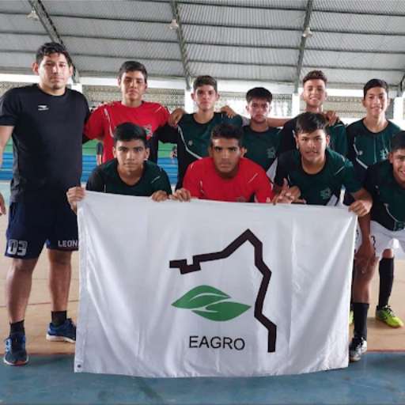
No futsal feminino, nossas meninas tiveram uma vitória na segunda fase, contra a Escola Estadual Indígena Paulo Augusto Silva. Entretanto, não atingiram a pontuação para a participação nas finais. Mas, precisamos evidenciar a dedicação e o talento de nossas estudantes, principalmente da discente Sayara, goleira do time, que desempenhou lindamente seu papel, executando grandes defesas. 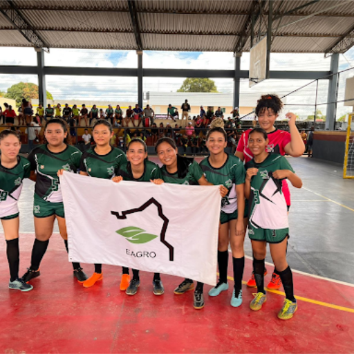
Nas modalidades individuais, a EAgro competiu com o karatê, o xadrez, o tênis de mesa e o taekwondo. A aluna Érica de Melo Nascimento, matriculada no 1º ano B, foi nossa competidora no karatê. Na categoria kata, ela conquistou o 3º lugar. A discente ainda participou da categoria kumite, na qual ficou classificada no lugar mais alto do pódio. 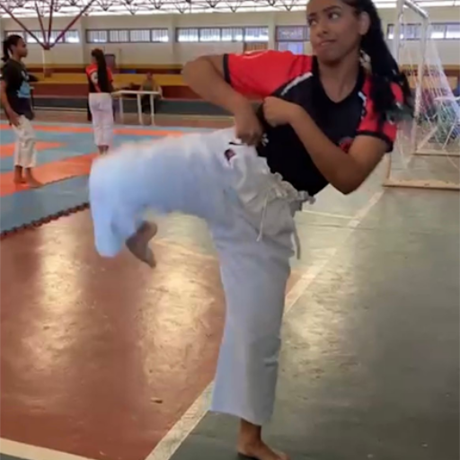
Nosso representante na modalidade xadrez foi o aluno Natanael dos Santos Pereira, do primeiro ano B. O enxadrista ganhou duas partidas durante sua participação nos jogos escolares, conquistando assim a quarta posição. 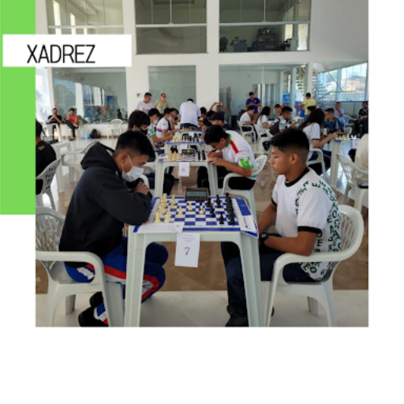
Já no tênis de mesa, o estudante Anthony, do primeiro ano, demonstrou suas habilidades vencendo duas partidas. 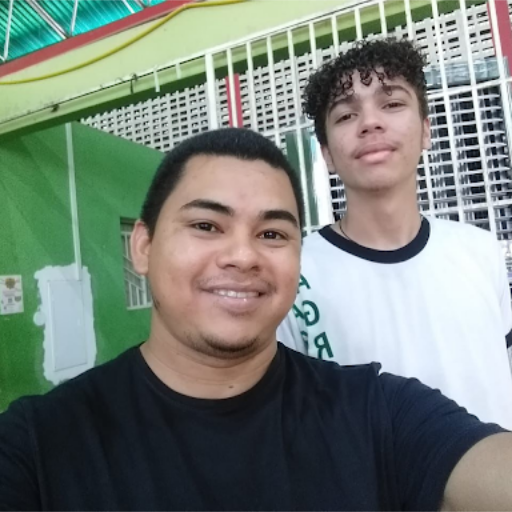
No taekwondo, nosso aluno do primeiro ano B, Dayllon Jonas Moreira de Amorim, conquistou o tão almejado primeiro lugar na competição regional, passando para a fase nacional. Em entrevista ao nosso jornal, Dayllon afirmou que “para começar foi uma grande oportunidade para nós que treinamos taekwondo, gente de todos os municípios vieram aqui para Boa Vista, a competição foi na Escola Hitler de Lucena. Pude fazer vários amigos e conhecer artistas marciais incríveis, todos diziam ser uma grande oportunidade, já que antigamente não existia o taekwondo nos jogos escolares. Para alguns, era a última oportunidade de ir, já que estavam com 17 anos.” O atleta ainda salientou que “muita gente participou e torceu pelo taekwondo, com certeza deu mais visibilidade para a incrível arte marcial que é o taekwondo, onde é ensinado cortesia, integridade, domínio sobre si mesmo e espírito indomável para qualquer situação na vida.” 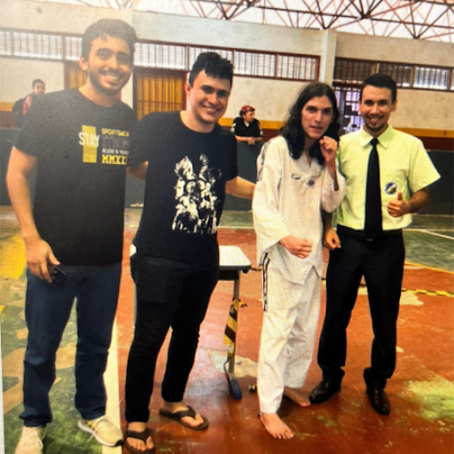
Nós, da equipe do EAgro News, damos os parabéns aos nossos competidores e competidoras, pois um grande esforço foi empregado por todos, desde o processo de inscrição até a disposição para participar das competições, que foram distribuídas ao longo de muitos dias. Destacamos um reconhecimento especial para os meninos e meninas que ficaram no alojamento do Estádio Canarinho, longe de seus amigos e familiares, mas em prol do esporte e da participação da Escola Agrotécnica nos Jogos Escolares 2022. Sintam-se vitoriosos e vitoriosas por toda essa dedicação.
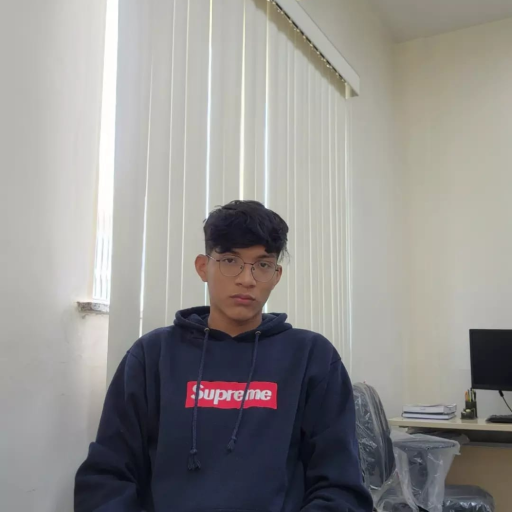 Erick Gabriel Araújo da Silva é repórter da EAgro News, aluno da terceira série do ensino médio.
Anne Ricaelly Rodrigues da Silva é editora do EAgro News, aluna da segunda série do ensino médio.
Olhar digital
As tecnologias em favor da agricultura:a situação do pequeno produtor rural
As tecnologias empregadas no âmbito da agricultura e da pecuária estão altamente desenvolvidas em diversos aspectos. Em relação aos fatores comerciais, tais avanços aumentam o desempenho e a rentabilidade do produtor.
Entretanto, percebe-se que esse desenvolvimento é desigual ao compararmos os grandes produtores com o pequeno produtor rural, justamente por conta do pouco poderio econômico deste último, além do frágil poder de barganha político e comercial. Consequentemente, os pequenos produtores são menos rentabilizados e encontram dificuldade elevada no início e no desenvolvimento de suas produções agrícolas.
De acordo com o site Summitagro, “muitos pequenos produtores ainda não vivem a era digital. A agricultura familiar tem cerca de 5 milhões de estabelecimentos e boa parte deles não conta com tecnologias básicas, como acesso à internet. E a tecnologia poderia trazer benefícios mportantes para esses empresários, como a previsão de condições meteorológicas, o gerenciamento de recursos, a redução de desperdícios e até mesmo a gestão financeira”.
Assim, na ausência de ferramentas tecnológicas, o agricultor acaba encontrando alguns desafios, acarretando diretamente no encolhimento das áreas cultivadas.
É importante salientar que as pesquisas científicas na área da agropecuária possuem caráter fundamental no desenvolvimento da agricultura familiar, no entanto, projetos excelentes que poderiam contribuir de forma significativa são inviabilizados por falta de incentivo político-econômico. Dessa forma, o pequeno agricultor permanece sem apoio para alavancar sua produção.
Os projetos científicos vão desde o melhoramento genético de cultivares até a utilização da agricultura de precisão em diversas etapas de manejo, tendo como principal objetivo aumentar a eficiência no uso de insumos agrícolas. Porém, sem o apoio governament
Felipe Miguel Brito é , editor-chefe do Jornal Eagro News, aluno da terceira série do ensino médio da EAgro
Relatos
Sobre ler e escrever pessoas
Autora: Alice Rossetti
Eu vi em algum lugar alguma vez alguém falar sobre ler pessoas E isso me soou tão familiar Pois falo constantemente sobre escrevê-las Transformar um metro e tanto de altura em versos proporcionalmente longos Falar meio cantado sobre olhos e sorrisos marcantes Perceber as vírgulas pontos e interrogações que compõem cada pessoa Basear-se em sonhos e ambições para compor com perfeição as palavras E sei que soa com estranheza a ideia de uma pessoa inteira virar uma porção de palavras Bem como disseram Na vez que vi alguém falar sobre ler pessoas “Como seria possível?! Uma pessoa espremida em uma única folha de papel?” Foi aí que percebi que as pessoas são livros Com uma porção de folhas Incontáveis versos Milhares de palavras Que me rendem algumas das minhas melhores leituras E são base para alguns dos meus melhores textos E assim me vi inspirada E pronta para escrever sobre quem vi em algum lugar alguma vez falar sobre ler pessoas
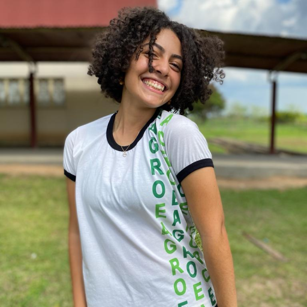 Alice Rossetti é aluna do 1°ano C da EAgroNós
Autora: Abgail Batista
Aquela reciprocidade de ilusão e carinho. Uma conexão. Como uma noite de lua cheia, que encanta, ou o furacão que é deixar as coisas para última hora. A agitação de um mar furioso, ou sua calmaria terna. Ciclos naturais. Em meios termos, estamos eu e você… ou corajosamente nós. 100% Abgail Batista é Regressa da EAgro.
Curiosidades
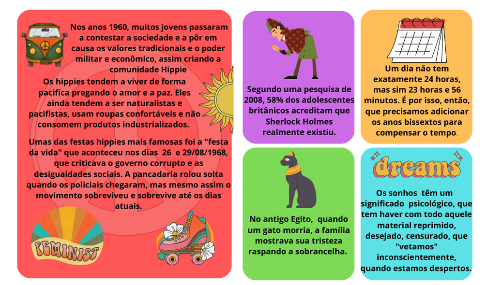Sugestão de filmes
Horóscopo
Áries: tome decisões de maneira firme, priorizando o que for mais estável, ariano. É hora de pensar no seu conforto.
Touro: o dia promete ser um tanto ansioso, mas com o passar das horas você fica mais sensível, taurino. Procure fazer tudo sem se estressar.
Gêmeos: você está cheio de ideias e está prestes a ter a sua vida ainda mais dinamizada, geminiano. Por isso, seja realista e tome cuidado com os excessos.
Câncer: é hora de pensar no longo prazo e de se cercar das pessoas certas, canceriano. Evite dar ouvidos a boatos e informações pouco embasadas.
Leão: não teime com o que parece não dar certo, leonino. É importante aprender com os seus próprios erros e estar aberto ao novo.
Virgem: é hora de virar páginas, mas é preciso cultivar a sabedoria, virginiano. Procure dividir suas decisões mais importantes com quem sabe mais do que você.
Libra: saiba negociar e dialogar para chegar ao que você quer, libriano. É importante que você não deixe de se posicionar, mas também que o faça com jeitinho.
Escorpião: mesmo que o dia seja agitado, é importante dar atenção às pessoas à sua volta, escorpiano. Procure agir com simpatia.
Sagitário: dê o seu toque pessoal nas suas coisas, sagitariano. Invista também no bom humor para trabalhar melhor em equipe.
Capricórnio: esteja mais próximo da família e daquilo que você mais gosta, capricorniano. Aliás, não deixe de separar um tempinho para cuidar de você ao longo do dia.
Aquário: o dia promete ser bastante agitado, então é importante que você consiga descansar um pouco depois da rotina atribulada, aquariano. Pegue leve.
Peixes: dê atenção ao que é seu e evite a dispersão, pisciano. Aliás, não deixe de pensar em investir também em cultura e informação de qualidade.
Fonte: www.istoe.com.br